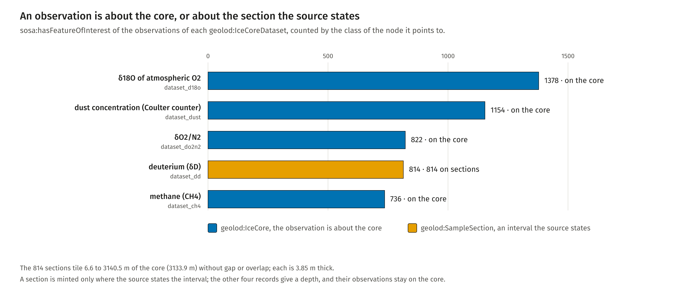
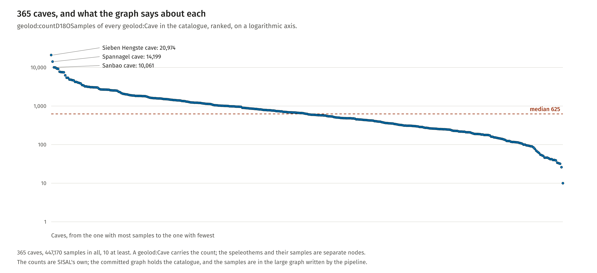

PREFIX geolod: <http://w3id.org/geo-lod/>
PREFIX strat: <http://w3id.org/geo-lod/strat/>
PREFIX sisal: <http://w3id.org/geo-lod/sisal/>
PREFIX sosa: <http://www.w3.org/ns/sosa/>
PREFIX rdfs: <http://www.w3.org/2000/01/rdf-schema#>
PREFIX dct: <http://purl.org/dc/terms/>
# Per class of the cluster: nodes typed with the class itself, and nodes typed with it or a subclass.
# Runs on the committed graphs (EPICA, SISAL cave catalogue) together with the three ontology files.
SELECT ?class (SUM(IF(?t = ?class, 1, 0)) AS ?asserted) (COUNT(DISTINCT ?x) AS ?with_subclasses) WHERE {
VALUES ?class { geolod:Borehole
geolod:Cave
geolod:DrillingCampaign
geolod:DrillingSite
geolod:EntityStatus
geolod:IceCore
geolod:IceCoreDataset
geolod:PalaeoclimateSample
geolod:SampleSection
geolod:SamplingLocation
geolod:Speleothem
geolod:SpeleothemSample }
?x a ?t .
?t rdfs:subClassOf* ?class .
} GROUP BY ?class
Run on the committed graphs and compared with a count in Python: 7 of 12 classes have asserted nodes.

What the observations of each dataset are about
Fiona Schenk, Florian Thiery, Research Squirrel Engineers at LEIZA. CC BY 4.0.
PREFIX geolod: <http://w3id.org/geo-lod/>
PREFIX strat: <http://w3id.org/geo-lod/strat/>
PREFIX sisal: <http://w3id.org/geo-lod/sisal/>
PREFIX sosa: <http://www.w3.org/ns/sosa/>
PREFIX rdfs: <http://www.w3.org/2000/01/rdf-schema#>
PREFIX dct: <http://purl.org/dc/terms/>
SELECT ?dataset ?feature_class (COUNT(?obs) AS ?n) WHERE {
?dataset a geolod:IceCoreDataset ;
geolod:hasObservation ?obs .
?obs sosa:hasFeatureOfInterest ?feature .
?feature a ?feature_class .
FILTER(?feature_class IN (geolod:IceCore, geolod:SampleSection))
} GROUP BY ?dataset ?feature_class ORDER BY ?dataset
Run on epica_dome_c.ttl and compared with the figure: five datasets, two classes.
SPARQL
PREFIX geolod: <http://w3id.org/geo-lod/>
PREFIX strat: <http://w3id.org/geo-lod/strat/>
PREFIX sisal: <http://w3id.org/geo-lod/sisal/>
PREFIX sosa: <http://www.w3.org/ns/sosa/>
PREFIX rdfs: <http://www.w3.org/2000/01/rdf-schema#>
PREFIX dct: <http://purl.org/dc/terms/>
# The sections of the core: how many, how thick in all, and where they start and end.
SELECT (COUNT(?s) AS ?sections) (SUM(?bottom - ?top) AS ?thickness_m) (MIN(?top) AS ?from_m) (MAX(?bottom) AS ?to_m) WHERE {
?s a geolod:SampleSection ;
geolod:depthTop_m ?top ;
geolod:depthBottom_m ?bottom .
}
Compared with the figure: 814 sections, 3133.9 m of 6.6 to 3140.5 m; the sections tile the core without gap or overlap.

How many delta-18-O samples each of the 365 caves stands for
Fiona Schenk, Florian Thiery, Research Squirrel Engineers at LEIZA. CC BY 4.0.
PREFIX geolod: <http://w3id.org/geo-lod/>
PREFIX strat: <http://w3id.org/geo-lod/strat/>
PREFIX sisal: <http://w3id.org/geo-lod/sisal/>
PREFIX sosa: <http://www.w3.org/ns/sosa/>
PREFIX rdfs: <http://www.w3.org/2000/01/rdf-schema#>
PREFIX dct: <http://purl.org/dc/terms/>
SELECT ?cave ?label ?d18o_samples WHERE {
?cave a geolod:Cave ;
rdfs:label ?label ;
geolod:countD18OSamples ?d18o_samples .
} ORDER BY DESC(?d18o_samples) ?label
Run on sisal_sites.ttl and compared with the figure: 365 rows. 447,170 samples in all, median 625, most 20,974 (Sieben Hengste cave).
Classes
Class
Label
Comment
CRM anchor
geolod:Borehole
Borehole
The individual hole from which core material was recovered, inside the wider site. Kept apart from the site because published records of the same drilling can carry different coordinates, and averaging them would invent a position that no source states.
crm:E27_Site, crm:E53_Place
geolod:Cave
Cave
A karst cave holding one or more speleothem records.
crm:E27_Site, crm:E53_Place
geolod:DrillingCampaign
Drilling Campaign
A field campaign during which an ice core was drilled.
crm:E7_Activity, crmsci:S1_Matter_Removal
geolod:DrillingSite
Ice Core Drilling Site
The location at which one or more ice cores were drilled. The individual holes are geolod:Borehole instances falling within it.
crm:E27_Site, crm:E53_Place
geolod:EntityStatus
Entity Status
SISAL's judgement on a speleothem record. A statement about the data, not about the cave.
crm:E55_Type
geolod:IceCore
Ice Core
A cylindrical ice sample extracted by drilling from a glacier or ice sheet.
crm:E22_Human-Made_Object
geolod:IceCoreDataset
Ice Core Dataset
A published set of measurements on one ice core, on one depth-age model.
crm:E73_Information_Object
geolod:PalaeoclimateSample
Palaeoclimate Sample
A physical archive recording a palaeoclimate signal (ice core or speleothem).
crm:E18_Physical_Thing
geolod:SampleSection
Sample Section
A bounded interval cut from a larger archive, over which a single value was measured or averaged. Minted only where the source states the interval; where a record gives a single depth and nothing else, the observation hangs on the whole archive instead of on an invented section.
crm:E18_Physical_Thing
geolod:SamplingLocation
Sampling Location
A geographically identified location from which palaeoclimate proxy material was obtained (ice-core drilling site or speleothem cave).
crm:E27_Site, crm:E53_Place
geolod:Speleothem
Speleothem
One secondary carbonate deposit whose growth records a climate signal. SISAL calls it an entity; several may come from one cave, and their isotope values are offset against one another for reasons unrelated to climate.
crm:E18_Physical_Thing
geolod:SpeleothemSample
Speleothem Sample
One sampling position along a speleothem, identified by its depth from the top. Carries the isotope measurements and the competing ages.